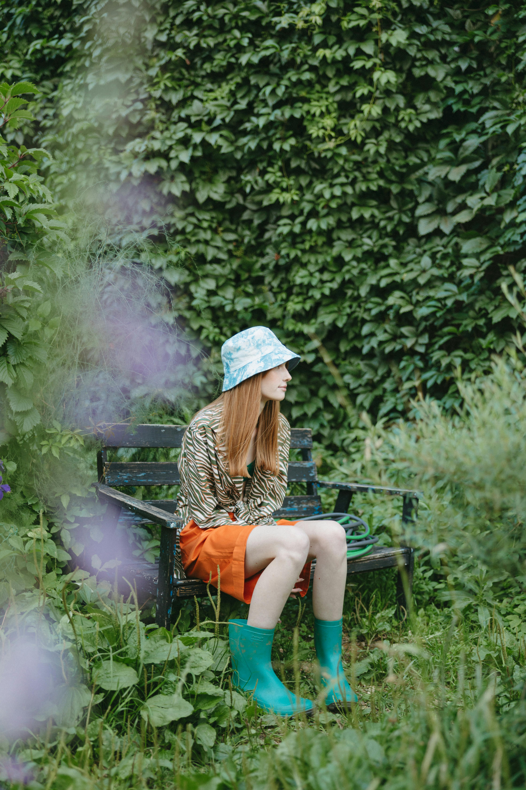

Mente & Humor
Meditação, diário e reflexões diárias
Acreditamos que o bem-estar não é sobre perfeição — é sobre pequenos e belos momentos de cuidado que preenchem sua vida com calor e cor.
Comece sua jornada de bem-estarMeditação, diário e reflexões diárias
Movimentos leves e exercícios restauradores
Ferramentas para ajudar você a se manter presente
Conecte-se com outras pessoas na sua jornada
Relatam mais calma em até 2 semanas
Melhor qualidade de sono
se sentem melhor com a VivaLume

"Eu vivia ansiosa o tempo todo. Com a VivaLume, comecei a criar uma rotina leve e hoje me sinto muito mais tranquila."
— Ana Clara, 29 anos"O que mais me ajudou foi acompanhar meu humor. Parece simples, mas fez muita diferença no meu dia a dia."
— Isadora Oliveira, 34 anos"Finalmente estou dormindo melhor. As sessões guiadas me ajudaram a desacelerar de verdade."
— Juliana Souza, 26 anos